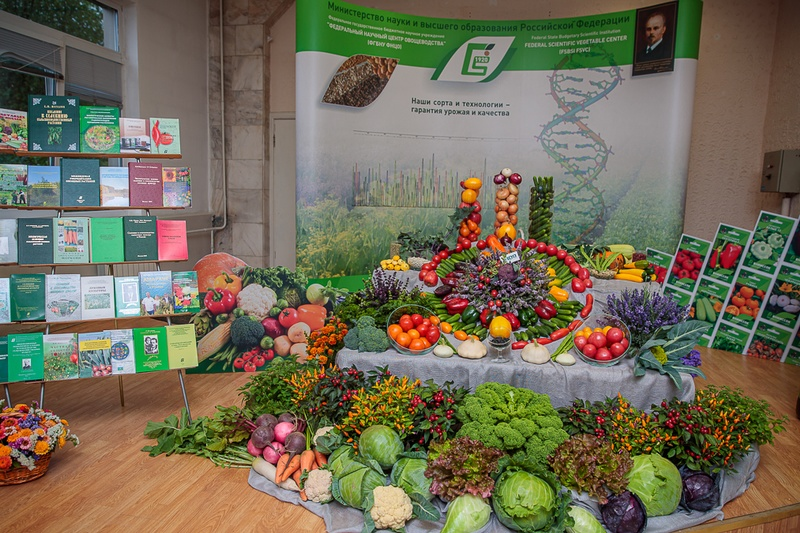

Федеральный научный центр овощеводства (ФГБНУ «ФНЦО») — федеральное государственное бюджетное научное учреждение, расположенное в посёлке ВНИИССОК Одинцовского района Московской области. До 2017 года носило наименование Всероссийский научно-исследовательский институт селекции и семеноводства овощных культур (ВНИИССОК). Является старейшим селекционным учреждением в России.
Предпосылкой организации государственного производства семян огородных растений для северной нечерноземной полосы России явился недостаток семян, вызванный прекращением поступления их из южных районов, а также из-за границы вследствие гражданской войны, что и побудило Наркомзем в 1918—1919 годах приступить к решению этих проблем. В 1920 году в хозяйстве Грибово возник питомник сортов огородных растений, получивший название селекционного отдела Осорьинского семенного района, организатором которого был профессор Тимирязевской академии С. И. Жегалов. Исследовательскую работу С. И. Жегалов начал с небольшим штатом сотрудников, преимущественно из состава слушательниц Голицынских высших сельскохозяйственных курсов. К концу 1921 года селекционный отдел был переименован в Грибовскую селекционную станцию огородных растений. С 1926 года станция уже приступила к селекционному размножению первых своих сортов. В 1928 году по инициативе Грибовской станции при Всесоюзном институте прикладной ботаники и новых культур было организовано государственное сортоиспытание овощных культур. Первые методические разработки проведения сортоиспытания были осуществлены на Грибовской опытной станции. С широким распространением сортов Грибовской станции она приобретает значение ведущей селекционной овощной станции СССР.
Усилиями нескольких поколений были разработаны методы селекции и созданы известные сорта, которые составляют золотой фонд России: капуста — Номер первый 147, Слава грибовская 231, Амагер 611, Подарок 2500; морковь — Нантская 4, свекла — Бордо 237, репа — Петровская 1. Улучшены и отселектированы местные сорта лука — Погарский, Бессоновский, Мстерский, томата для открытого грунта — Грунтовый Грибовский 1180, Алпатьева 905А, огурца — Муромский 36, Вязниковский 37, выведены и улучшены сорта гороха с сахарным бобом, например Жегалова 112. Они стали основой отечественного ассортимента овощных культур и дальнейшего развития селекции в нашей стране. Благодаря селекционерам Грибовской станции (акад. А. В. Алпатьев и др.) впервые в стране была широко продвинута на север культура томата. Были созданы штамбовые раннеспелые сорта с низким заложением первой кисти.
К 1970 году расширились научные исследования и углубилась селекционная работа, было выведено, улучшено и передано в производство 240 новых сортов овощных и бахчевых культур, 20 сортов крупноцветкового душистого горошка. Лучшие сорта на международных выставках были отмечены золотыми, серебряными и бронзовыми медалями. В Эрфурте (Германия) в 1961 и 1969 годах сорта Грибовской станции получили 18 золотых, 13 серебряных и две бронзовые медали. Одиннадцать сортов белокочанной капусты, созданных Е. М. Поповой, удостоены награды «Гран-при». За выдающиеся успехи в селекции и семеноводстве награждены Сталинской премией опытный организатор селекционно-семеноводческой науки академик Е. И. Ушакова (директор станции с 1937 по 1966 год), выдающийся ученый академик А. В. Алпатьев, талантливые селекционеры кандидаты наук С. П. Агапов и Е. М. Попова.
В 1970 году за достигнутые успехи в области селекции и семеноводства и в связи с 50-летием Грибовская овощная селекционная опытная станция была награждена орденом Трудового Красного Знамени и Решением Государственного комитета Совета Министров СССР по науке и технике от 28 октября 1970 года и приказом Министерства сельского хозяйства СССР от 23 ноября 1970 года была преобразована во Всесоюзный научно-исследовательский институт селекции и семеноводства овощных культур. В 1992 году переименован во Всероссийский научно-исследовательский институт селекции и семеноводства овощных культур.
Во ВНИИССОК сложился научно-методический центр по селекции и семеноводству овощных культур, на основе которого в 1974 году был организован и действует селекционный центр Нечерноземной зоны РФ. При институте работают одиннадцать методических комиссий, координирующих исследования научных учреждений России по теоретическим и методическим вопросам селекции и семеноводства различных групп овощных культур.
Институт участвует в Государственных и международных научно-технических программах, ведет фундаментальные и приоритетные прикладные исследования по частной генетике, иммунитету, молекулярным и гаметным методам селекции, биотехнологии, биохимии и физиологии, экологической селекции; проводит селекционно-семеноводческую работу по капустным, корнеплодным, луковым, пасленовым, тыквенным, бобовым, зеленным, интродуцированным и цветочным культурам; разрабатывает новые эффективные методы селекции; создает исходный материал нового поколения, сорта и гетерозисные гибриды F1 повышенной продуктивности, со стабильной урожайностью и устойчивостью к биотическим и абиотическим стрессорам, с хорошими вкусовыми и технологическими качествами продукции, с высоким содержанием БАВ и АО, с высоким адаптивным потенциалом, с минимальным накоплением тяжелых металлов и радионуклидов с целью формирования сортовых ресурсов для производства экологически безопасной продукции на антропогенно загрязненных территориях, конкурентоспособные, отвечающие современным требованиям рынка; разрабатывает и совершенствует методы первичного семеноводства, нормативно-техническую документацию по стандартизации.
Во ВНИИССОК впервые получены детерминантные формы томата и гороха овощного, неосыпающиеся формы, раннеспелые безлисточковые детерминантные формы гороха овощного с повышенным (3—5) числом продуктивных узлов; формы фасоли с желтоокрашенными бобами и верхним расположением бобов; сорта и гибриды огурца с комплексной устойчивостью к четырем-пяти болезням в сочетании с высокими засолочными качествами, без горечи; детерминантные, холодостойкие, партенокарпические формы томата и доноры устойчивости к фитофторозу, септориозу, альтернариозу, галловой нематоде; межвидовые холодостойкие, раннеспелые, дружносозревающие, с высокой урожайностью, повышенным содержанием пектина (до 16 %) наряду с пониженным содержанием гликоалкалоида физалина гибриды физалиса овощного; оригинальные формы перца сладкого с ЦМС, источники ультраскороспелости, высокого содержания витамина С, бета-каротина, с толщиной перикарпия до 7—9 мм; разновидности острого перца различной формы и окраски плода, с высоким содержанием капсоицина; острые сорта лука репчатого с высоким содержанием сухого вещества (до 20 %), лежкие, с групповой устойчивостью к наиболее вредоносным патогенам; созданы генетически односемянные, одноростковые формы свеклы столовой с ядерной ЦМС; сорта редиса со съедобной листвой, не имеющие аналогов; всесезонные формы и линии дайкона, носители ЦМС; созданы гетерозисные гибриды капусты белокочанной и других разновидностей (китайская, савойская, кольраби) с комплексной устойчивостью к болезням и вредителям; собран уникальный сортимент зеленных и пряно-вкусовых культур; генофонд обогащен новыми нетрадиционными культурами (стахис, дайкон, монарда, мака, хризантема овощная и др.); созданы сорта горошка душистого, получившие призовые места на престижных международных выставках.
С использованием традиционных и новых современных методов учеными ВНИИССОК создано более 750 сортов и гибридов, 486 из которых включены в Госреестр селекционных достижений РФ на 2010 год. За комплекс хозяйственно ценных признаков, широкое районирование, высокие технологические и потребительские качества многие из этих сортов награждены дипломами и медалями различных выставок.
Институт ежегодно производит 200—300 т семян суперэлиты, элиты и других репродукций.
В первичном семеноводстве института ежегодно находятся более 140 сортов и гибридов по 60 овощным культурам. Институт осуществляет авторский контроль за семеноводческими посевами, оказывает научно-методическую помощь хозяйствам в производстве сортовых семян, внедрении новых сортов и технологических разработок по семеноводству.
ВНИИССОК ведет Международный технический комитет № 124 в АПК РФ, сотрудничает с 19 организациями России, других стран СНГ по реализации долгосрочного прогноза развития стандартизации в семеноводстве овощных и бахчевых культур до 2015 года. В последние годы разработаны 16 ГОСТов, один стандарт ЕЭК ООН, 37 отраслевых стандартов, 6 технических условий и 5 руководящих документов. Разработан и утвержден Национальный стандарт РФ «Семена овощных, бахчевых культур, кормовых корнеплодов и кормовой капусты» (ГОСТ Р 52171-2003), который унифицирован с международными нормативными актами и увязан с Законом «О семеноводстве».
На всех этапах своей деятельности ВНИИССОК является не только научно-методическим и координационным центром, но и центром подготовки кадров высшей квалификации в области селекции и семеноводства овощных культур. С 1962 года в институте действует аспирантура и докторантура, в которой прошли подготовку свыше 350 аспирантов, ежегодно проводятся курсы по подготовке апробаторов овоще-бахчевых и цветочных культур.
Международное научно-техническое сотрудничество ВНИИССОК осуществляется в рамках межведомственных соглашений и двухсторонних договоров по созданию генетических ресурсов и гибридов овощных растений с научно-исследовательскими учреждениями и фирмами стран дальнего зарубежья (Австрия, Италия, Болгария, Япония) и стран СНГ (Белоруссия, Украина, Азербайджан, Казахстан, Молдавия).
ВНИИССОК традиционно уделяет большое внимание Межведомственной координационной программе фундаментальных и приоритетных прикладных исследований по научному обеспечению развития АПК на 2006—2010 годы по проблеме 09, где ВНИИССОК является головной организацией. В выполнении задания участвуют 15 НИУ РАСХН и 14 НИУ других министерств и ведомств, что свидетельствует о многообразном сотрудничестве учреждений по решению проблем селекции овощных культур.